The goal of rfars is to facilitate transportation safety analysis by simplifying the process of extracting data from official crash databases. The National Highway Traffic Safety Administration collects and publishes a census of fatal crashes in the Fatality Analysis Reporting System and a sample of fatal and non-fatal crashes in the Crash Report Sampling System (an evolution of the General Estimates System). The Fatality and Injury Reporting System Tool allows users to query these databases, and can produce simple tables and graphs. This suffices for simple analysis, but often leaves researchers wanting more. Digging any deeper, however, involves a time-consuming process of downloading annual ZIP files and attempting to stitch them together - after first combing through immense data dictionaries to determine the required variables and table names.
rfars allows users to download FARS and GES/CRSS data back to 2011 with just one line of code. The result is a full, rich dataset ready for mapping, modeling, and other downstream analysis. Helper functions are also provided to produce common counts and comparisons.
Installation
You can install the latest version of rfars from GitHub with:
# install.packages("devtools")
devtools::install_github("s87jackson/rfars")or the CRAN stable release with:
install.packages("rfars")Then load rfars and some helpful packages:
Getting and Using FARS Data
Use the get_fars() function to bring FARS data into the current environment and optionally save an RDS file for future use (faster than downloading anew). This is done by (a) downloading the data to a temporary directory, (b) downloading to a permanent directory, or (c) importing from a permanent directory. After data is downloaded to a permanent directory, the function will look there rather than downloading the data again. If a year of data is requested but not found, R will ask your permission to download the missing data.
Here we get three years of data for Virginia:
myFARS <- get_fars(years = 2019:2021, states = "VA")This returns a ‘FARS’ object: a list with six tibbles: flat, multi_acc, multi_veh, multi_per, events, and codebook.
The flat tibble contains all variables for which there is just one value per crash (“accident”), vehicle, or person (e.g., weather conditions, travel speed, age). Each row corresponds to a person involved in a crash. As there may be multiple people and/or vehicles involved in one crash, some variable-values are repeated within a crash or vehicle. Each crash is uniquely identified with id, which is a combination of year and st_case. Note that st_case is not unique across years, for example, st_case 510001 will appear in each year. The id variable attempts to avoid this issue.
Please review the FARS Analytical User’s Manual for more information.
glimpse(myFARS$flat)
#> Rows: 5,465
#> Columns: 199
#> $ year <dbl> 2019, 2019, 2019, 2019, 2019, 2019, 2019, 2019, 2019, 20…
#> $ state <chr> "Virginia", "Virginia", "Virginia", "Virginia", "Virgini…
#> $ st_case <dbl> 510001, 510001, 510002, 510002, 510003, 510003, 510004, …
#> $ id <dbl> 2019510001, 2019510001, 2019510002, 2019510002, 20195100…
#> $ veh_no <dbl> 0, 1, 1, 2, 1, 1, 0, 1, 1, 1, 2, 0, 1, 1, 1, 2, 0, 1, 1,…
#> $ per_no <dbl> 1, 1, 1, 1, 1, 2, 1, 1, 1, 2, 1, 1, 1, 1, 2, 1, 1, 1, 1,…
#> $ county <dbl> 760, 760, 137, 137, 53, 53, 107, 107, 175, 175, 175, 157…
#> $ city <dbl> 2060, 2060, 0, 0, 0, 0, 0, 0, 0, 0, 0, 0, 0, 0, 0, 0, 19…
#> $ lon <dbl> -77.48444, -77.48444, -77.94240, -77.94240, -77.66604, -…
#> $ lat <dbl> 37.50924, 37.50924, 38.19840, 38.19840, 37.00784, 37.007…
#> $ acc_type <chr> NA, "C13-Single Driver-Forward Impact-Pedestrian/ Animal…
#> $ age <chr> "17 Years", "42 Years", "83 Years", "44 Years", "50 Year…
#> $ air_bag <chr> "Not a Motor Vehicle Occupant", "Reported as Deployment …
#> $ alc_det <chr> "Not Reported", "Not Reported", "Not Reported", "Not Rep…
#> $ alc_res <chr> "0.000 % BAC", "Test Not Given", "0.000 % BAC", "Test No…
#> $ alc_status <chr> "Test Given", "Test Not Given", "Test Given", "Test Not …
#> $ arr_hour <chr> "Unknown EMS Scene Arrival Hour", "Unknown EMS Scene Arr…
#> $ arr_min <chr> "Unknown EMS Scene Arrival Minutes", "Unknown EMS Scene …
#> $ atst_typ <chr> "Blood", "Test Not Given", "Blood", "Test Not Given", "T…
#> $ bikecgp <chr> "Not a Cyclist", NA, NA, NA, NA, NA, "Not a Cyclist", NA…
#> $ bikectype <chr> "Not a Cyclist", NA, NA, NA, NA, NA, "Not a Cyclist", NA…
#> $ bikedir <chr> "Not a Cyclist", NA, NA, NA, NA, NA, "Not a Cyclist", NA…
#> $ bikeloc <chr> "Not a Cyclist", NA, NA, NA, NA, NA, "Not a Cyclist", NA…
#> $ bikepos <chr> "Not a Cyclist", NA, NA, NA, NA, NA, "Not a Cyclist", NA…
#> $ body_typ <chr> NA, "4-door sedan, hardtop", "2-door sedan,hardtop,coupe…
#> $ bus_use <chr> NA, "Not a Bus", "Not a Bus", "Not a Bus", "Not a Bus", …
#> $ cargo_bt <chr> NA, "Not Applicable (N/A)", "Not Applicable (N/A)", "Not…
#> $ cdl_stat <chr> NA, "No (CDL)", "No (CDL)", "No (CDL)", "No (CDL)", "No …
#> $ cityname <chr> "RICHMOND", "RICHMOND", "NOT APPLICABLE", "NOT APPLICABL…
#> $ countyname <chr> "RICHMOND (760)", "RICHMOND (760)", "ORANGE (137)", "ORA…
#> $ day <dbl> 1, 1, 2, 2, 3, 3, 4, 4, 7, 7, 7, 6, 6, 6, 6, 6, 7, 7, 6,…
#> $ day_week <chr> "Tuesday", "Tuesday", "Wednesday", "Wednesday", "Thursda…
#> $ death_da <chr> "1", "Not Applicable (Non-Fatal)", "2", "Not Applicable …
#> $ death_hr <chr> "6:00-6:59", "Not Applicable (Non-fatal)", "15:00-15:59"…
#> $ death_mn <chr> "32", "Not Applicable (Non-fatal)", "35", "Not Applicabl…
#> $ death_mo <chr> "January", "Not Applicable (Non-Fatal)", "January", "Not…
#> $ death_tm <chr> NA, "Not Applicable (Non-fatal)", NA, "Not Applicable (N…
#> $ death_yr <chr> "2019", "Not Applicable (Non-fatal)", "2019", "Not Appli…
#> $ deaths <dbl> NA, 0, 1, 0, 1, 1, NA, 0, 1, 1, 0, NA, 0, 1, 1, 0, NA, 0…
#> $ deformed <chr> NA, "Reported as Unknown", "Disabling Damage", "Disablin…
#> $ doa <chr> "Not Applicable", "Not Applicable", "Died at Scene", "No…
#> $ dr_drink <chr> NA, "No", "No", "No", "No", "No", NA, "Yes", "No", "No",…
#> $ dr_hgt <chr> NA, NA, NA, NA, NA, NA, NA, NA, NA, NA, NA, NA, NA, NA, …
#> $ dr_pres <chr> NA, "Yes", "Yes", "Yes", "Yes", "Yes", NA, "Yes", "Yes",…
#> $ dr_wgt <chr> NA, "160 lbs.", "220 lbs.", "220 lbs.", "170 lbs.", "170…
#> $ dr_zip <chr> NA, NA, NA, NA, NA, NA, NA, NA, NA, NA, NA, NA, NA, NA, …
#> $ drinking <chr> "Not Reported", "Reported as Unknown", "No (Alcohol Not …
#> $ drug_det <chr> "Not Reported", "Not Reported", "Not Reported", "Not Rep…
#> $ drugs <chr> "Reported as Unknown", "Reported as Unknown", "No (drugs…
#> $ drunk_dr <dbl> 0, 0, 0, 0, 0, 0, 1, 1, 0, 0, 0, 0, 0, 0, 0, 0, 0, 0, 0,…
#> $ dstatus <chr> "Test Given", "Test Not Given", "Test Given", "Test Not …
#> $ ej_path <chr> "Ejection Path Not Applicable", "Ejection Path Not Appli…
#> $ ejection <chr> "Not Applicable", "Not Ejected", "Not Ejected", "Not Eje…
#> $ emer_use <chr> NA, "Not Applicable", "Not Applicable", "Not Applicable"…
#> $ extricat <chr> "Not Extricated or Not Applicable", "Not Extricated or N…
#> $ fatals <dbl> 1, 1, 1, 1, 1, 1, 1, 1, 1, 1, 1, 1, 1, 1, 1, 1, 1, 1, 1,…
#> $ fire_exp <chr> NA, "No or Not Reported", "No or Not Reported", "No or N…
#> $ first_mo <chr> NA, "October", "No Record", "No Record", "No Record", "N…
#> $ first_yr <chr> NA, "2016", "No Record", "No Record", "No Record", "No R…
#> $ func_sys <chr> "Principal Arterial - Other", "Principal Arterial - Othe…
#> $ gvwr <chr> NA, "Not Applicable", "Not Applicable", "Not Applicable"…
#> $ harm_ev <chr> "Pedestrian", "Pedestrian", "Motor Vehicle In-Transport"…
#> $ haz_cno <chr> NA, "Not Applicable", "Not Applicable", "Not Applicable"…
#> $ haz_id <chr> NA, "Not Applicable", "Not Applicable", "Not Applicable"…
#> $ haz_inv <chr> NA, "No", "No", "No", "No", "No", NA, "No", "No", "No", …
#> $ haz_plac <chr> NA, "Not Applicable", "Not Applicable", "Not Applicable"…
#> $ haz_rel <chr> NA, "Not Applicable", "Not Applicable", "Not Applicable"…
#> $ helm_mis <chr> "Not a Motor Vehicle Occupant", "None Used/Not Applicabl…
#> $ helm_use <chr> "Not a Motor Vehicle Occupant", "Not Applicable", "Not A…
#> $ hispanic <chr> "Non-Hispanic", "Not A Fatality (not Applicable)", "Non-…
#> $ hit_run <chr> NA, "Yes", "No", "No", "No", "No", NA, "No", "No", "No",…
#> $ hosp_hr <chr> "Unknown", "Unknown", "Unknown", "Unknown", "Unknown", "…
#> $ hosp_mn <chr> "Unknown EMS Hospital Arrival Time", "Unknown EMS Hospit…
#> $ hospital <chr> "EMS Unknown Mode", "Not Transported", "Not Transported"…
#> $ hour <chr> "5:00am-5:59am", "5:00am-5:59am", "3:00pm-3:59pm", "3:00…
#> $ impact1 <chr> NA, "12 Clock Point", "12 Clock Point", "12 Clock Point"…
#> $ inj_sev <chr> "Fatal Injury (K)", "No Apparent Injury (O)", "Fatal Inj…
#> $ j_knife <chr> NA, "Not an Articulated Vehicle", "Not an Articulated Ve…
#> $ l_compl <chr> NA, "Valid license for this class vehicle", "Valid licen…
#> $ l_endors <chr> NA, "No Endorsements required for this vehicle", "No End…
#> $ l_restri <chr> NA, "Restrictions, Compliance Unknown", "No Restrictions…
#> $ l_state <chr> NA, "Virginia", "Virginia", "Virginia", "Virginia", "Vir…
#> $ l_status <chr> NA, "Valid", "Valid", "Valid", "Valid", "Valid", NA, "Va…
#> $ l_type <chr> NA, "Full Driver License", "Full Driver License", "Full …
#> $ lag_hrs <chr> NA, "Unknown", NA, "Unknown", "Unknown", NA, NA, "Unknow…
#> $ lag_mins <chr> NA, "Unknown", NA, "Unknown", "Unknown", NA, NA, "Unknow…
#> $ last_mo <chr> NA, "March", "No Record", "No Record", "No Record", "No …
#> $ last_yr <chr> NA, "2018", "No Record", "No Record", "No Record", "No R…
#> $ lgt_cond <chr> "Dark - Lighted", "Dark - Lighted", "Daylight", "Dayligh…
#> $ location <chr> "Not at Intersection - On Roadway, Not in Marked Crosswa…
#> $ m_harm <chr> NA, "Pedestrian", "Motor Vehicle In-Transport", "Motor V…
#> $ mak_mod <chr> NA, "Chevrolet Malibu/Malibu Maxx", "Pontiac Grand AM", …
#> $ make <chr> NA, "Chevrolet", "Pontiac", "Toyota", "Chevrolet", "Chev…
#> $ man_coll <chr> "The First Harmful Event was Not a Collision with a Moto…
#> $ mcarr_i1 <chr> NA, "Not Applicable", "Not Applicable", "Not Applicable"…
#> $ mcarr_i2 <chr> NA, "Not Applicable", "Not Applicable", "Not Applicable"…
#> $ mcarr_id <chr> NA, "Not Applicable", "Not Applicable", "Not Applicable"…
#> $ milept <chr> NA, NA, NA, NA, NA, NA, NA, NA, NA, NA, NA, NA, NA, NA, …
#> $ minute <dbl> 48, 48, 35, 35, 5, 5, 30, 30, 47, 47, 47, 5, 5, 36, 36, …
#> $ mod_year <chr> NA, NA, NA, NA, NA, NA, NA, NA, NA, NA, NA, NA, NA, NA, …
#> $ model <dbl> NA, 37, 18, 46, 473, 473, NA, 402, 471, 471, 482, NA, 40…
#> $ month <chr> "January", "January", "January", "January", "January", "…
#> $ motdir <chr> "Not Applicable", NA, NA, NA, NA, NA, "Not Applicable", …
#> $ motman <chr> "Not Applicable", NA, NA, NA, NA, NA, "Not Applicable", …
#> $ nhs <chr> "This section IS ON the NHS", "This section IS ON the NH…
#> $ nmhelmet <chr> "Not Reported", NA, NA, NA, NA, NA, "Not Reported", NA, …
#> $ nmlight <chr> "Not Reported", NA, NA, NA, NA, NA, "Not Reported", NA, …
#> $ nmothpre <chr> "Not Reported", NA, NA, NA, NA, NA, "Not Reported", NA, …
#> $ nmothpro <chr> "Not Reported", NA, NA, NA, NA, NA, "Not Reported", NA, …
#> $ nmpropad <chr> "Not Reported", NA, NA, NA, NA, NA, "Not Reported", NA, …
#> $ nmrefclo <chr> "Not Reported", NA, NA, NA, NA, NA, "Not Reported", NA, …
#> $ not_hour <chr> "Unknown", "Unknown", "Unknown", "Unknown", "Unknown", "…
#> $ not_min <chr> "Unknown", "Unknown", "Unknown", "Unknown", "Unknown", "…
#> $ numoccs <chr> NA, "Unknown", "01", "01", "02", "02", NA, "01", "02", "…
#> $ owner <chr> NA, "Driver (in this crash) was Registered Owner", "Dri…
#> $ p_crash1 <chr> NA, "Going Straight", "Going Straight", "Going Straight"…
#> $ p_crash2 <chr> NA, "Pedestrian in road", "Over the lane line on left si…
#> $ p_crash3 <chr> NA, "Unknown/Not Reported", "No Avoidance Maneuver", "No…
#> $ pbcwalk <chr> "None Noted", NA, NA, NA, NA, NA, "None Noted", NA, NA, …
#> $ pbswalk <chr> "None Noted", NA, NA, NA, NA, NA, "None Noted", NA, NA, …
#> $ pbszone <chr> "None Noted", NA, NA, NA, NA, NA, "None Noted", NA, NA, …
#> $ pcrash4 <chr> NA, "Tracking", "Tracking", "Tracking", "Skidding latera…
#> $ pcrash5 <chr> NA, "Stayed in original travel lane", "Stayed on roadway…
#> $ pedcgp <chr> "Pedestrian in Roadway - Circumstances Unknown", NA, NA,…
#> $ pedctype <chr> "Lying in Roadway", NA, NA, NA, NA, NA, "Walking/Running…
#> $ peddir <chr> "Not Applicable", NA, NA, NA, NA, NA, "Not Applicable", …
#> $ pedleg <chr> "Not Applicable", NA, NA, NA, NA, NA, "Not Applicable", …
#> $ pedloc <chr> "Not At Intersection", NA, NA, NA, NA, NA, "Not At Inter…
#> $ pedpos <chr> "Travel Lane", NA, NA, NA, NA, NA, "Travel Lane", NA, NA…
#> $ peds <dbl> 1, 1, 0, 0, 0, 0, 1, 1, 0, 0, 0, 1, 1, 0, 0, 0, 1, 1, 0,…
#> $ pedsnr <chr> "Not Applicable", NA, NA, NA, NA, NA, "Not Applicable", …
#> $ per_typ <chr> "Pedestrian", "Driver of a Motor Vehicle In-Transport", …
#> $ permvit <dbl> 1, 1, 2, 2, 2, 2, 1, 1, 3, 3, 3, 1, 1, 3, 3, 3, 1, 1, 1,…
#> $ pernotmvit <dbl> 1, 1, 0, 0, 0, 0, 1, 1, 0, 0, 0, 1, 1, 0, 0, 0, 1, 1, 0,…
#> $ persons <dbl> 1, 1, 2, 2, 2, 2, 1, 1, 3, 3, 3, 1, 1, 3, 3, 3, 1, 1, 1,…
#> $ prev_acc <chr> NA, "1", "None", "None", "None", "None", NA, "None", "No…
#> $ prev_dwi <chr> NA, "None", "None", "None", "None", "None", NA, "None", …
#> $ prev_oth <chr> NA, "None", "None", "None", "None", "None", NA, "None", …
#> $ prev_spd <chr> NA, "1", "None", "None", "None", "None", NA, "None", "No…
#> $ prev_sus1 <chr> NA, "None", "None", "None", "None", "None", NA, "None", …
#> $ prev_sus2 <chr> NA, "None", "None", "None", "None", "None", NA, "None", …
#> $ prev_sus3 <chr> NA, "1", "None", "None", "None", "None", NA, "None", "No…
#> $ pvh_invl <dbl> 0, 0, 0, 0, 0, 0, 0, 0, 0, 0, 0, 0, 0, 0, 0, 0, 0, 0, 0,…
#> $ rail <chr> "Not Applicable", "Not Applicable", "Not Applicable", "N…
#> $ rd_owner <chr> "City or Municipal Highway Agency", "City or Municipal H…
#> $ reg_stat <chr> NA, "Virginia", "Virginia", "Virginia", "Virginia", "Vir…
#> $ rel_road <chr> "On Roadway", "On Roadway", "On Roadway", "On Roadway", …
#> $ reljct1 <chr> "No", "No", "No", "No", "No", "No", "No", "No", "No", "N…
#> $ reljct2 <chr> "Non-Junction", "Non-Junction", "Non-Junction", "Non-Jun…
#> $ rest_mis <chr> "Not a Motor Vehicle Occupant", "None Used/Not Applicabl…
#> $ rest_use <chr> "Not a Motor Vehicle Occupant", "None Used/Not Applicabl…
#> $ rolinloc <chr> NA, "No Rollover", "No Rollover", "No Rollover", "On Med…
#> $ rollover <chr> NA, "No Rollover", "No Rollover", "No Rollover", "Rollov…
#> $ route <chr> "U.S. Highway", "U.S. Highway", "U.S. Highway", "U.S. Hi…
#> $ rur_urb <chr> "Urban", "Urban", "Rural", "Rural", "Rural", "Rural", "R…
#> $ sch_bus <chr> "No", "No", "No", "No", "No", "No", "No", "No", "No", "N…
#> $ seat_pos <chr> "Not a Motor Vehicle Occupant", "Front Seat, Left Side",…
#> $ sex <chr> "Female", "Female", "Male", "Male", "Male", "Male", "Fem…
#> $ sp_jur <chr> "No Special Jurisdiction", "No Special Jurisdiction", "N…
#> $ spec_use <chr> NA, "No Special Use", "No Special Use", "No Special Use"…
#> $ speedrel <chr> NA, "No", "No", "No", "No", "No", NA, "No", "No", "No", …
#> $ statename <chr> "Virginia", "Virginia", "Virginia", "Virginia", "Virgini…
#> $ str_veh <dbl> 1, 0, 0, 0, 0, 0, 1, 0, 0, 0, 0, 1, 0, 0, 0, 0, 1, 0, 0,…
#> $ tow_veh <chr> NA, "No Trailing Units", "No Trailing Units", "No Traili…
#> $ towed <chr> NA, "Not Towed", "Towed Due to Disabling Damage", "Towed…
#> $ trav_sp <chr> NA, "Not Reported", "055 MPH", "055 MPH", "073 MPH", "07…
#> $ trlr1vin <chr> NA, "No Trailing Units", "No Trailing Units", "No Traili…
#> $ trlr2vin <chr> NA, "No Trailing Units", "No Trailing Units", "No Traili…
#> $ trlr3vin <chr> NA, "No Trailing Units", "No Trailing Units", "No Traili…
#> $ tway_id <chr> "US-60", "US-60", "US-522", "US-522", "I-85", "I-85", "C…
#> $ tway_id2 <chr> NA, NA, NA, NA, NA, NA, NA, NA, "TUCKER SWAMP RD", "TUCK…
#> $ typ_int <chr> "Not an Intersection", "Not an Intersection", "Not an In…
#> $ underide <chr> NA, "No Underride or Override Noted", "No Underride or O…
#> $ unittype <chr> NA, "Motor Vehicle In-Transport (Inside or Outside the T…
#> $ v_config <chr> NA, "Not Applicable", "Not Applicable", "Not Applicable"…
#> $ valign <chr> NA, "Straight", "Straight", "Straight", "Straight", "Str…
#> $ ve_forms <dbl> 1, 1, 2, 2, 1, 1, 1, 1, 2, 2, 2, 1, 1, 2, 2, 2, 1, 1, 1,…
#> $ ve_total <dbl> 1, 1, 2, 2, 1, 1, 1, 1, 2, 2, 2, 1, 1, 2, 2, 2, 1, 1, 1,…
#> $ vin <chr> NA, NA, NA, NA, NA, NA, NA, NA, NA, NA, NA, NA, NA, NA, …
#> $ vnum_lan <chr> NA, "Two lanes", "Two lanes", "Two lanes", "Two lanes", …
#> $ vpavetyp <chr> NA, "Blacktop, Bituminous, or Asphalt", "Blacktop, Bitum…
#> $ vprofile <chr> NA, "Level", "Grade, Unknown Slope", "Grade, Unknown Slo…
#> $ vspd_lim <chr> NA, "35 MPH", "55 MPH", "55 MPH", "70 MPH", "70 MPH", NA…
#> $ vsurcond <chr> NA, "Dry", "Dry", "Dry", "Wet", "Wet", NA, "Dry", "Dry",…
#> $ vtcont_f <chr> NA, "No Controls", "No Controls", "No Controls", "No Con…
#> $ vtrafcon <chr> NA, "No Controls", "No Controls", "No Controls", "No Con…
#> $ vtrafway <chr> NA, "Two-Way, Divided, Positive Median Barrier", "Two-…
#> $ work_inj <chr> "No", "Not Applicable (not a fatality)", "No", "Not Appl…
#> $ wrk_zone <chr> "None", "None", "None", "None", "None", "None", "None", …
#> $ gvwr_from <chr> NA, NA, NA, NA, NA, NA, NA, NA, NA, NA, NA, NA, NA, NA, …
#> $ gvwr_to <chr> NA, NA, NA, NA, NA, NA, NA, NA, NA, NA, NA, NA, NA, NA, …
#> $ icfinalbody <chr> NA, NA, NA, NA, NA, NA, NA, NA, NA, NA, NA, NA, NA, NA, …
#> $ trlr1gvwr <chr> NA, NA, NA, NA, NA, NA, NA, NA, NA, NA, NA, NA, NA, NA, …
#> $ trlr2gvwr <chr> NA, NA, NA, NA, NA, NA, NA, NA, NA, NA, NA, NA, NA, NA, …
#> $ trlr3gvwr <chr> NA, NA, NA, NA, NA, NA, NA, NA, NA, NA, NA, NA, NA, NA, …
#> $ vpicbodyclass <chr> NA, NA, NA, NA, NA, NA, NA, NA, NA, NA, NA, NA, NA, NA, …
#> $ vpicmake <chr> NA, NA, NA, NA, NA, NA, NA, NA, NA, NA, NA, NA, NA, NA, …
#> $ vpicmodel <chr> NA, NA, NA, NA, NA, NA, NA, NA, NA, NA, NA, NA, NA, NA, …
#> $ underoverride <chr> NA, NA, NA, NA, NA, NA, NA, NA, NA, NA, NA, NA, NA, NA, …The multi_ tibbles contain those variables for which there may be a varying number of values for any entity (e.g., driver impairments, vehicle events, weather conditions at time of crash). Each tibble has the requisite data elements corresponding to the entity: multi_acc includes st_case and year, multi_veh adds veh_no (vehicle number), and multi_per adds per_no (person number).
The top three name-value pairs of each tibble are shown below.
myFARS$multi_acc %>% group_by(name, value) %>% summarize(n=n()) %>%
arrange(name, desc(n)) %>% mutate(rank=row_number()) %>%
filter(rank<=3) %>%
select(-rank)
#> `summarise()` has grouped output by 'name'. You can override using the
#> `.groups` argument.
#> # A tibble: 21 × 3
#> # Groups: name [7]
#> name value n
#> <chr> <chr> <int>
#> 1 cf1 Motor Vehicle struck by falling cargo,or something that came l… 702
#> 2 cf1 Police Pursuit Involved 343
#> 3 cf1 Indication of a Stalled/Disabled Vehicle 313
#> 4 cf2 Reported as Unknown 248
#> 5 cf2 Indication of a Stalled/Disabled Vehicle 68
#> 6 cf2 Recent/Previous Crash scene Nearby 43
#> 7 cf3 Reported as Unknown 248
#> 8 cf3 Indication of a Stalled/Disabled Vehicle 4
#> 9 cf3 Motor Vehicle struck by falling cargo,or something that came l… 4
#> 10 crashrf Motor Vehicle struck by falling cargo,or something that came l… 1675
#> # … with 11 more rows
myFARS$multi_veh %>% group_by(name, value) %>% summarize(n=n()) %>%
arrange(name, desc(n)) %>% mutate(rank=row_number()) %>%
filter(rank<=3) %>%
select(-rank)
#> `summarise()` has grouped output by 'name'. You can override using the
#> `.groups` argument.
#> # A tibble: 65 × 3
#> # Groups: name [22]
#> name value n
#> <chr> <chr> <int>
#> 1 damage 12 Clock Value 83188
#> 2 damage 11 Clock Value 45840
#> 3 damage 1 Clock Value 43183
#> 4 dr_sf1 Failure to Yield Right-of-Way 3331
#> 5 dr_sf1 Careless Driving 2996
#> 6 dr_sf1 Improper Lane Usage 2938
#> 7 dr_sf2 Reported as Unknown 1987
#> 8 dr_sf2 Operating the Vehicle in an Erratic, Reckless or Negligent Mann… 604
#> 9 dr_sf2 Failure to Obey Actual Traffic Sign,Traffic Control Devices or … 475
#> 10 dr_sf3 Reported as Unknown 1987
#> # … with 55 more rows
myFARS$multi_per %>% group_by(name, value) %>% summarize(n=n()) %>%
arrange(name, desc(n)) %>% mutate(rank=row_number()) %>%
filter(rank<=3) %>%
select(-rank)
#> `summarise()` has grouped output by 'name'. You can override using the
#> `.groups` argument.
#> # A tibble: 46 × 3
#> # Groups: name [16]
#> name value n
#> <chr> <chr> <int>
#> 1 drugres Test Not Given 150302
#> 2 drugres Tested, No Drugs Found/Negative 40884
#> 3 drugres Other Drug 13496
#> 4 drugspec Test Not Given 150304
#> 5 drugspec Whole Blood 114007
#> 6 drugspec Reported as Unknown if Tested 11641
#> 7 mnmdstrd Not Distracted 1896
#> 8 mnmdstrd Reported as Unknown if Distracted 496
#> 9 mnmdstrd Inattention (Inattentive), Details Unknown 82
#> 10 mpr_act Crossing Roadway 4461
#> # … with 36 more rowsThe events tibble provides a sequence of numbered events for each vehicle in each crash.
head(myFARS$events, 10)
#> state st_case veh_no aoi
#> 1 Alabama 10001 1 12 Clock Point
#> 2 Alabama 10001 2 6 Clock Point
#> 3 Alabama 10002 1 12 Clock Point
#> 4 Alabama 10002 1 Non-Harmful Event
#> 5 Alabama 10002 1 Non-Collision
#> 6 Alabama 10002 2 6 Clock Point
#> 7 Alabama 10003 1 12 Clock Point
#> 8 Alabama 10003 1 Other Objects or Person Set-In-Motion
#> 9 Alabama 10003 2 6 Clock Point
#> 10 Alabama 10003 3 12 Clock Point
#> soe
#> 1 Motor Vehicle In-Transport
#> 2 Motor Vehicle In-Transport
#> 3 Motor Vehicle In-Transport
#> 4 Ran Off Roadway - Left
#> 5 Rollover/Overturn
#> 6 Motor Vehicle In-Transport
#> 7 Motor Vehicle In-Transport
#> 8 Motor Vehicle In-Transport Strikes or is Struck by Cargo, Persons or Objects Set-in-Motion from/by Another Motor Vehicle In Transport
#> 9 Motor Vehicle In-Transport
#> 10 Motor Vehicle In-Transport Strikes or is Struck by Cargo, Persons or Objects Set-in-Motion from/by Another Motor Vehicle In Transport
#> veventnum year
#> 1 1 2019
#> 2 1 2019
#> 3 1 2019
#> 4 2 2019
#> 5 3 2019
#> 6 1 2019
#> 7 1 2019
#> 8 2 2019
#> 9 1 2019
#> 10 1 2019The codebook tibble provides a searchable codebook for the data, useful if you know what concept you’re looking for but not the variable that describes it.
# View(myFARS$codebook)
myFARS$codebook %>%
filter(name_rfars == "lgt_cond") %>% distinct() %>% head(10)
#> source year file name_ncsa name_rfars label value
#> 1 FARS 2019 accident LGT_COND lgt_cond Light Condition 1
#> 2 FARS 2019 accident LGT_COND lgt_cond Light Condition 2
#> 3 FARS 2019 accident LGT_COND lgt_cond Light Condition 3
#> 4 FARS 2019 accident LGT_COND lgt_cond Light Condition 4
#> 5 FARS 2019 accident LGT_COND lgt_cond Light Condition 5
#> 6 FARS 2019 accident LGT_COND lgt_cond Light Condition 6
#> 7 FARS 2019 accident LGT_COND lgt_cond Light Condition 7
#> 8 FARS 2019 accident LGT_COND lgt_cond Light Condition 8
#> 9 FARS 2019 accident LGT_COND lgt_cond Light Condition 9
#> 10 FARS 2020 accident LGT_COND lgt_cond Light Condition 1
#> value_label
#> 1 Daylight
#> 2 Dark - Not Lighted
#> 3 Dark - Lighted
#> 4 Dawn
#> 5 Dusk
#> 6 Dark - Unknown Lighting
#> 7 Other
#> 8 Not Reported
#> 9 Reported as Unknown
#> 10 DaylightCounts
A first step in many transportation safety analyses involves counting the number of relevant crashes, fatalities, or people involved. counts() lets users specify what to count, where to count them (rural/urban and/or in specified states or regions), who to include, the interval over which to count (annually or monthly), and factors involved in the crashes. It returns a simple tibble that can be easily piped into ggplot() to quickly visualize counts.
my_counts <- counts(
myFARS,
what = "crashes",
interval = c("year")
)
head(my_counts)
#> # A tibble: 3 × 8
#> # Groups: year [3]
#> year date n what states region urb who
#> <dbl> <date> <int> <chr> <chr> <chr> <chr> <chr>
#> 1 2019 2019-01-01 774 crashes all all all all
#> 2 2020 2020-01-01 796 crashes all all all all
#> 3 2021 2021-01-01 906 crashes all all all all
my_counts %>%
ggplot(aes(x=date, y=n, label=scales::comma(n))) +
geom_col() +
geom_label(vjust=1.2) +
labs(x=NULL, y=NULL, title = "Fatal Crashes in Virginia")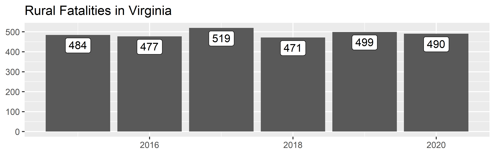
counts(
myFARS,
what = "fatalities",
interval = c("year")
) %>%
ggplot(aes(x=date, y=n, label=scales::comma(n))) +
geom_col() +
geom_label(vjust=1.2) +
labs(x=NULL, y=NULL, title = "Fatalities in Virginia")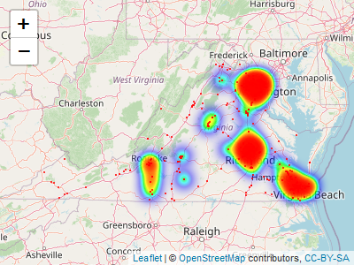
counts(myFARS,
what = "fatalities",
where = list(urb="rural"),
interval = c("year")
) %>%
ggplot(aes(x=date, y=n, label=scales::comma(n))) +
geom_col() +
geom_label(vjust=1.2) +
labs(x=NULL, y=NULL, title = "Rural Fatalities in Virginia")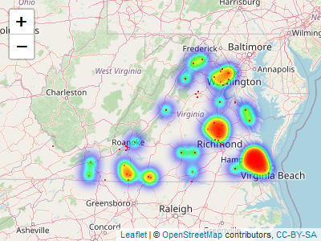
counts(myFARS,
what = "fatalities",
where = list(urb="rural"),
interval = c("year"),
involved = "speeding"
) %>%
ggplot(aes(x=date, y=n, label=scales::comma(n))) +
geom_col() +
geom_label(vjust=1.2) +
labs(x=NULL, y=NULL, title = "Speeding-Related Fatalities in Rural Virginia")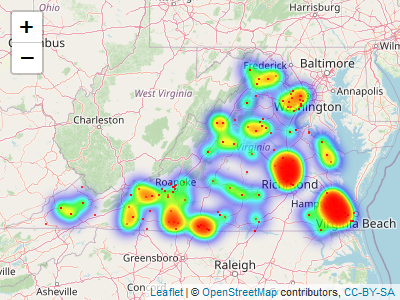
We can combine two counts() results to make a comparison. Here we compare the number of speeding-related fatalities in rural and urban Virginia:
compare_counts(
df = myFARS,
involved = "speeding",
what = "fatalities",
where = list(urb="rural"),
where2 = list(urb="urban")
) %>%
ggplot(aes(x=date, y=n, label=scales::comma(n))) +
geom_col() +
geom_label(vjust=1.2) +
facet_wrap(.~urb) +
labs(x=NULL, y=NULL, title = "Speeding-Related Fatalities in Virginia", fill=NULL)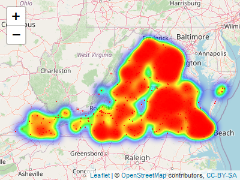
Mapping
We can take advantage of having access to the full data with maps. Here we map pedestrian and bicyclist fatalities in Virginia:
counts(
myFARS,
what = "crashes",
involved = "pedbike",
filterOnly = TRUE
) %>%
leaflet() %>%
addTiles() %>%
addHeatmap(group = "Heatmap", radius=10, blur=20, minOpacity = .01, max = .2, cellSize = 1) %>%
addCircleMarkers(
radius = 1,
color = "red",
stroke = FALSE,
fillOpacity = 0.7, group = "Crash Locations")
#> Assuming "lon" and "lat" are longitude and latitude, respectively
#> Assuming "lon" and "lat" are longitude and latitude, respectively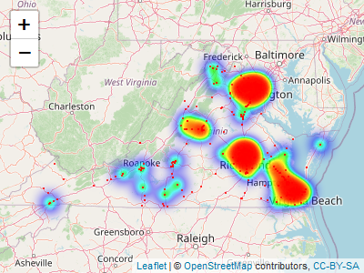
Drug-related crashes:
counts(
myFARS,
what = "crashes",
involved = "drugs",
filterOnly = TRUE
) %>%
filter(!is.na(lat), !is.na(lon)) %>%
filter(lat < 90, lon < 900) %>%
leaflet() %>%
addTiles() %>%
addHeatmap(group = "Heatmap", radius=10, blur=20, minOpacity = .01, max = .2, cellSize = 1) %>%
addCircleMarkers(
radius = 1,
color = "red",
stroke = FALSE,
fillOpacity = 0.7, group = "Crash Locations")
#> Assuming "lon" and "lat" are longitude and latitude, respectively
#> Assuming "lon" and "lat" are longitude and latitude, respectively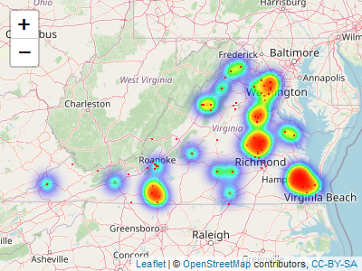
Young drivers:
counts(
myFARS,
what = "crashes",
involved = "young driver",
filterOnly = TRUE
) %>%
filter(!is.na(lat), !is.na(lon)) %>%
filter(lat < 90, lon < 900) %>%
leaflet() %>%
addTiles() %>%
addHeatmap(group = "Heatmap", radius=10, blur=20, minOpacity = .01, max = .2, cellSize = 1) %>%
addCircleMarkers(
radius = 1,
color = "red",
stroke = FALSE,
fillOpacity = 0.7, group = "Crash Locations")
#> Assuming "lon" and "lat" are longitude and latitude, respectively
#> Assuming "lon" and "lat" are longitude and latitude, respectively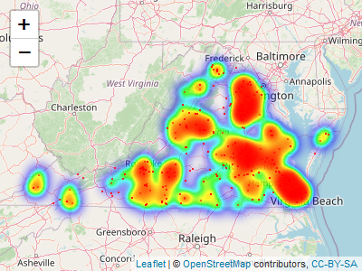
Modeling
Having access to the full dataset also allows us to develop statistical models. Here we fit a simple model of injury severity as a function of age and restraint use. The results indicate that injury severity increases with age, and when seat belts are not used properly.
# table(myFARS$flat$inj_sev)
# table(myFARS$flat$rest_use, useNA = "ifany")
# table(myFARS$flat$per_typ, useNA = "ifany")
model_data <-
myFARS$flat %>%
filter(rest_use %in% c("Lap Belt Only Used",
"Shoulder Belt Only Used",
"None Used / Not Applicable",
"None Used/Not Applicable",
"Shoulder and Lap Belt Used"),
per_typ %in% c("Driver of a Motor Vehicle In-Transport",
"Passenger of a Motor Vehicle In-Transport")
) %>%
mutate(
rest_use = case_when(
rest_use %in% c("Lap Belt Only Used", "Shoulder Belt Only Used") ~ "Partial",
rest_use %in% c("None Used / Not Applicable", "None Used/Not Applicable") ~ "None",
rest_use %in% c("Shoulder and Lap Belt Used") ~ "Full",
TRUE ~ "Unknown"
) %>%
as.factor() %>%
relevel(ref = "Full"),
kabco = case_when(
inj_sev == "Fatal Injury (K)" ~ 4,
inj_sev %in% c("Suspected Serious Injury (A)",
"Suspected Serious Injury(A)") ~ 3,
inj_sev %in% c("Suspected Minor Injury (B)",
"Suspected Minor Injury(B)") ~ 2,
inj_sev == "Possible Injury (C)" ~ 1,
inj_sev == "No Apparent Injury (O)" ~ 0,
TRUE ~ as.numeric(NA)
),
age_n = gsub("\\D+","", age) %>% as.numeric())
my_model <- lm(kabco ~ age_n + rest_use, data = model_data)
stargazer::stargazer(my_model, type = "html")| Dependent variable: | |
| kabco | |
| age_n | 0.009*** |
| (0.001) | |
| rest_useNone | 1.442*** |
| (0.040) | |
| rest_usePartial | 0.453** |
| (0.211) | |
| Constant | 1.759*** |
| (0.051) | |
| Observations | 4,583 |
| R2 | 0.222 |
| Adjusted R2 | 0.222 |
| Residual Std. Error | 1.324 (df = 4579) |
| F Statistic | 436.515*** (df = 3; 4579) |
| Note: | p<0.1; p<0.05; p<0.01 |
new_data <- expand.grid(
age_n = c(20, 60),
rest_use = factor(c("Full", "Partial", "None"), levels = c("Full", "Partial", "None"), ordered = TRUE) )
new_data %>%
mutate(pred = predict(my_model, newdata = new_data),
age = paste0(age_n, " yrs")) %>%
ggplot(aes(x=rest_use, y=pred)) +
geom_col() +
facet_wrap(.~age) +
scale_y_continuous(
limits = c(0,4), breaks = 0:4, labels = c("O", "C", "B", "A", "K"), expand = expansion()) +
theme(panel.grid = element_blank(),
panel.grid.major.y = element_line(c("black")),
axis.ticks = element_blank()) +
labs(x="", y="", title = "Predicted Injury Severity by Age and Restraint Use",
caption = "Full = correctly used seatbelt, partial = partially correctly used, none = no seatbelt.")
Getting and Using GES/CRSS Data
Use the get_grscrss() function to bring GES/CRSS data into the current environment and optionally save an RDS file for future use (faster than downloading anew). This is done by (a) downloading the data to a temporary directory, (b) downloading to a permanent directory, or (c) importing from a permanent directory. After data is downloaded to a permanent directory, the function will look there rather than downloading the data again. If a year of data is requested but not found, R will ask your permission to download the missing data.
Here we get three years of data. We do not specify a region so that we can confirm the results with official data.
myGESCRSS <- get_gescrss(years = 2019:2021)
#> Warning in dir.create(paste0(dest_raw_y, "/format-32")):
#> 'C:\Users\s87ja\AppData\Local\Temp\Rtmpkj60Mx\GESCRSS data\raw\2020\format-32'
#> already exists
#> Warning in dir.create(paste0(dest_raw_y, "/format-64")):
#> 'C:\Users\s87ja\AppData\Local\Temp\Rtmpkj60Mx\GESCRSS data\raw\2020\format-64'
#> already exists
#>
#> ── Column specification ────────────────────────────────────────────────────────
#> cols(
#> .default = col_character(),
#> year = col_double(),
#> psu = col_double(),
#> psustrat = col_double(),
#> casenum = col_double(),
#> weight = col_double(),
#> id = col_double(),
#> veh_no = col_double(),
#> per_no = col_double(),
#> minute = col_double(),
#> mod_year = col_logical(),
#> model = col_double(),
#> peds = col_double(),
#> permvit = col_double(),
#> pernotmvit = col_double(),
#> psu_var = col_double(),
#> pvh_invl = col_double(),
#> str_veh = col_double(),
#> ve_forms = col_double(),
#> ve_total = col_double()
#> )
#> ℹ Use `spec()` for the full column specifications.This returns a ‘GESCRSS’ object: a list with six tibbles: flat, multi_acc, multi_veh, multi_per, events, and codebook.
The flat tibble contains all variables for which there is just one value per crash (“accident”), vehicle, or person (e.g., weather conditions, travel speed, age). Each row corresponds to a person involved in a crash. As there may be multiple people and/or vehicles involved in one crash, some variable-values are repeated within a crash or vehicle. Each crash is uniquely identified with id, which is a combination of year and casenum.
Please review the CRSS Analytical User’s Manual for more information.
glimpse(myGESCRSS$flat)
#> Rows: 401,162
#> Columns: 144
#> $ year <dbl> 2019, 2019, 2019, 2019, 2019, 2019, 2019, 2019, 2019, 2…
#> $ region <chr> "South (MD, DE, DC, WV, VA, KY, TN, NC, SC, GA, FL, AL,…
#> $ psu <dbl> 75, 63, 63, 63, 63, 63, 63, 65, 65, 12, 12, 12, 12, 75,…
#> $ psustrat <dbl> 19, 16, 16, 16, 16, 16, 16, 13, 13, 12, 12, 12, 12, 19,…
#> $ casenum <dbl> 201901174219, 201901176655, 201901176655, 201901176655,…
#> $ weight <dbl> 203.66512, 59.07346, 59.07346, 59.07346, 59.07346, 59.0…
#> $ id <dbl> 2.019202e+15, 2.019202e+15, 2.019202e+15, 2.019202e+15,…
#> $ veh_no <dbl> 1, 1, 1, 1, 1, 2, 2, 1, 2, 1, 1, 2, 2, 1, 2, 0, 1, 1, 1…
#> $ per_no <dbl> 1, 1, 2, 3, 4, 1, 2, 1, 1, 1, 1, 1, 2, 1, 1, 1, 1, 1, 2…
#> $ acc_type <chr> "B7-Single Driver-Left Roadside Departure-Control/Tract…
#> $ age <chr> "39 Years", "20 Years", "19 Years", "47 Years", "39 Yea…
#> $ air_bag <chr> "Not Deployed", "Not Deployed", "Not Deployed", "Not De…
#> $ alc_res <chr> "Test Not Given", "Test Not Given", "Test Not Given", "…
#> $ alc_status <chr> "Test Not Given", "Test Not Given", "Test Not Given", "…
#> $ alcohol <chr> "No Alcohol Involved", "No Alcohol Involved", "No Alcoh…
#> $ atst_typ <chr> "Test Not Given", "Test Not Given", "Test Not Given", "…
#> $ bikecgp <chr> NA, NA, NA, NA, NA, NA, NA, NA, NA, NA, NA, NA, NA, NA,…
#> $ bikectype <chr> NA, NA, NA, NA, NA, NA, NA, NA, NA, NA, NA, NA, NA, NA,…
#> $ bikedir <chr> NA, NA, NA, NA, NA, NA, NA, NA, NA, NA, NA, NA, NA, NA,…
#> $ bikeloc <chr> NA, NA, NA, NA, NA, NA, NA, NA, NA, NA, NA, NA, NA, NA,…
#> $ bikepos <chr> NA, NA, NA, NA, NA, NA, NA, NA, NA, NA, NA, NA, NA, NA,…
#> $ body_typ <chr> "Light Pickup", "4-door sedan, hardtop", "4-door sedan,…
#> $ bus_use <chr> "Not a Bus", "Not a Bus", "Not a Bus", "Not a Bus", "No…
#> $ cargo_bt <chr> "Not Applicable (N/A)", "Not Applicable (N/A)", "Not Ap…
#> $ day_week <chr> "3", "3", "3", "3", "3", "3", "3", "3", "3", "3", "3", …
#> $ deformed <chr> "Disabling Damage", "Functional Damage", "Functional Da…
#> $ dr_pres <chr> "Yes", "Yes", "Yes", "Yes", "Yes", "Yes", "Yes", "Yes",…
#> $ dr_zip <chr> NA, NA, NA, NA, NA, NA, NA, NA, NA, NA, NA, NA, NA, NA,…
#> $ drinking <chr> "No (Alcohol Not Involved)", "No (Alcohol Not Involved)…
#> $ drugs <chr> "No (drugs not involved)", "Not Reported", "Not Reporte…
#> $ ejection <chr> "Not Ejected", "Not Ejected", "Not Ejected", "Not Eject…
#> $ emer_use <chr> "Not Applicable", "Not Applicable", "Not Applicable", "…
#> $ fire_exp <chr> "No or Not Reported", "No or Not Reported", "No or Not …
#> $ gvwr <chr> "Not Applicable", "Not Applicable", "Not Applicable", "…
#> $ harm_ev <chr> "Curb", "Motor Vehicle In-Transport", "Motor Vehicle In…
#> $ haz_cno <chr> "Not Applicable", "Not Applicable", "Not Applicable", "…
#> $ haz_id <chr> "Not Applicable", "Not Applicable", "Not Applicable", "…
#> $ haz_inv <chr> "No", "No", "No", "No", "No", "No", "No", "No", "No", "…
#> $ haz_plac <chr> "Not Applicable", "Not Applicable", "Not Applicable", "…
#> $ haz_rel <chr> "Not Applicable", "Not Applicable", "Not Applicable", "…
#> $ helm_mis <chr> "None Used/Not Applicable", "None Used/Not Applicable",…
#> $ helm_use <chr> "Not Applicable", "Not Applicable", "Not Applicable", "…
#> $ hit_run <chr> "No", "No", "No", "No", "No", "No", "No", "No", "No", "…
#> $ hospital <chr> "Not Transported", "Not Transported", "Other", "Not Tra…
#> $ hour <chr> "8:00am-8:59am", "2:00am-2:59am", "2:00am-2:59am", "2:0…
#> $ impact1 <chr> "3 Clock Point", "Right", "Right", "Right", "Right", "1…
#> $ inj_sev <chr> "No Apparent Injury (O)", "No Apparent Injury (O)", "Po…
#> $ int_hwy <chr> "No", "No", "No", "No", "No", "No", "No", "No", "No", "…
#> $ j_knife <chr> "Not an Articulated Vehicle", "Not an Articulated Vehic…
#> $ lgt_cond <chr> "Daylight", "Dark - Lighted", "Dark - Lighted", "Dark -…
#> $ location <chr> "Occupant of a Motor Vehicle", "Occupant of a Motor Veh…
#> $ m_harm <chr> "Rollover/Overturn", "Motor Vehicle In-Transport", "Mot…
#> $ mak_mod <chr> "Ford Ranger", "Dodge Dart (2013 on. See model 001 for …
#> $ make <chr> "Ford", "Dodge", "Dodge", "Dodge", "Dodge", "Honda", "H…
#> $ man_coll <chr> "The First Harmful Event was Not a Collision with a Mot…
#> $ max_sev <chr> "No Apparent Injury (O)", "Possible Injury (C)", "Possi…
#> $ max_vsev <chr> "No Apparent Injury (O)", "Possible Injury (C)", "Possi…
#> $ mcarr_i1 <chr> "Not Applicable", "Not Applicable", "Not Applicable", "…
#> $ mcarr_i2 <chr> "Not Applicable", "Not Applicable", "Not Applicable", "…
#> $ mcarr_id <chr> "Not Applicable", "Not Applicable", "Not Applicable", "…
#> $ minute <dbl> 6, 12, 12, 12, 12, 12, 12, 33, 33, 8, 41, 41, 41, 42, 4…
#> $ mod_year <lgl> NA, NA, NA, NA, NA, NA, NA, NA, NA, NA, NA, NA, NA, NA,…
#> $ model <dbl> 471, 29, 29, 29, 29, 402, 402, 402, 481, 51, 422, 32, 3…
#> $ month <chr> "January", "January", "January", "January", "January", …
#> $ motdir <chr> NA, NA, NA, NA, NA, NA, NA, NA, NA, NA, NA, NA, NA, NA,…
#> $ motman <chr> NA, NA, NA, NA, NA, NA, NA, NA, NA, NA, NA, NA, NA, NA,…
#> $ nmhelmet <chr> NA, NA, NA, NA, NA, NA, NA, NA, NA, NA, NA, NA, NA, NA,…
#> $ nmlight <chr> NA, NA, NA, NA, NA, NA, NA, NA, NA, NA, NA, NA, NA, NA,…
#> $ nmothpre <chr> NA, NA, NA, NA, NA, NA, NA, NA, NA, NA, NA, NA, NA, NA,…
#> $ nmothpro <chr> NA, NA, NA, NA, NA, NA, NA, NA, NA, NA, NA, NA, NA, NA,…
#> $ nmpropad <chr> NA, NA, NA, NA, NA, NA, NA, NA, NA, NA, NA, NA, NA, NA,…
#> $ nmrefclo <chr> NA, NA, NA, NA, NA, NA, NA, NA, NA, NA, NA, NA, NA, NA,…
#> $ num_inj <chr> "No Person Injured/Property Damage Only Crash", NA, NA,…
#> $ num_injv <chr> "No Person Injured in Vehicle", NA, NA, NA, NA, NA, NA,…
#> $ numoccs <chr> "01", "04", "04", "04", "04", "02", "02", "01", "01", "…
#> $ p_crash1 <chr> "Accelerating in Road", "Going Straight", "Going Straig…
#> $ p_crash2 <chr> "Traveling too fast for conditions or Road Configuratio…
#> $ p_crash3 <chr> "Unknown/Not Reported", "Unknown/Not Reported", "Unknow…
#> $ pbcwalk <chr> NA, NA, NA, NA, NA, NA, NA, NA, NA, NA, NA, NA, NA, NA,…
#> $ pbptype <chr> NA, NA, NA, NA, NA, NA, NA, NA, NA, NA, NA, NA, NA, NA,…
#> $ pbswalk <chr> NA, NA, NA, NA, NA, NA, NA, NA, NA, NA, NA, NA, NA, NA,…
#> $ pbszone <chr> NA, NA, NA, NA, NA, NA, NA, NA, NA, NA, NA, NA, NA, NA,…
#> $ pcrash4 <chr> "Skidding Laterally, Rotation Direction Unknown", "Trac…
#> $ pcrash5 <chr> "Departed roadway", "Stayed in original travel lane", "…
#> $ pedcgp <chr> NA, NA, NA, NA, NA, NA, NA, NA, NA, NA, NA, NA, NA, NA,…
#> $ pedctype <chr> NA, NA, NA, NA, NA, NA, NA, NA, NA, NA, NA, NA, NA, NA,…
#> $ peddir <chr> NA, NA, NA, NA, NA, NA, NA, NA, NA, NA, NA, NA, NA, NA,…
#> $ pedleg <chr> NA, NA, NA, NA, NA, NA, NA, NA, NA, NA, NA, NA, NA, NA,…
#> $ pedloc <chr> NA, NA, NA, NA, NA, NA, NA, NA, NA, NA, NA, NA, NA, NA,…
#> $ pedpos <chr> NA, NA, NA, NA, NA, NA, NA, NA, NA, NA, NA, NA, NA, NA,…
#> $ peds <dbl> 0, 0, 0, 0, 0, 0, 0, 0, 0, 0, 0, 0, 0, 0, 0, 1, 1, 0, 0…
#> $ pedsnr <chr> NA, NA, NA, NA, NA, NA, NA, NA, NA, NA, NA, NA, NA, NA,…
#> $ per_typ <chr> "Driver of a Motor Vehicle In-Transport", "Driver of a …
#> $ permvit <dbl> 1, 6, 6, 6, 6, 6, 6, 2, 2, 1, 3, 3, 3, 2, 2, 1, 1, 3, 3…
#> $ pernotmvit <dbl> 0, 0, 0, 0, 0, 0, 0, 0, 0, 0, 0, 0, 0, 0, 0, 1, 1, 0, 0…
#> $ psu_var <dbl> 75, 63, 63, 63, 63, 63, 63, 65, 65, 12, 12, 12, 12, 75,…
#> $ pvh_invl <dbl> 0, 0, 0, 0, 0, 0, 0, 0, 0, 0, 0, 0, 0, 0, 0, 0, 0, 0, 0…
#> $ rel_road <chr> "On Median", "On Roadway", "On Roadway", "On Roadway", …
#> $ reljct1 <chr> "Yes", "Not Reported", "Not Reported", "Not Reported", …
#> $ reljct2 <chr> "Entrance/Exit Ramp Related", "Intersection", "Intersec…
#> $ rest_mis <chr> "No Indication of Mis-Use", "No Indication of Mis-Use",…
#> $ rest_use <chr> "Shoulder and Lap Belt Used", "Shoulder and Lap Belt Us…
#> $ rolinloc <chr> "On Median/Separator", "No Rollover", "No Rollover", "N…
#> $ rollover <chr> "Rollover, Tripped by Object/Vehicle", "No Rollover", "…
#> $ sch_bus <chr> "No", "No", "No", "No", "No", "No", "No", "No", "No", "…
#> $ seat_pos <chr> "Front Seat, Left Side", "Front Seat, Left Side", "Fron…
#> $ sex <chr> "Male", "Male", "Male", "Male", "Male", "Female", "Male…
#> $ spec_use <chr> "No Special Use", "No Special Use", "No Special Use", "…
#> $ speedrel <chr> "Yes, Too Fast for Conditions", "No", "No", "No", "No",…
#> $ str_veh <dbl> 0, 0, 0, 0, 0, 0, 0, 0, 0, 0, 0, 0, 0, 0, 0, 1, 0, 0, 0…
#> $ tow_veh <chr> "No Trailing Units", "No Trailing Units", "No Trailing …
#> $ towed <chr> "Towed Due to Disabling Damage", "Towed Not Due to Disa…
#> $ trav_sp <chr> "Not Reported", "Not Reported", "Not Reported", "Not Re…
#> $ typ_int <chr> "Not an Intersection", "Four-Way Intersection", "Four-W…
#> $ unittype <chr> "Motor Vehicle In-Transport (Inside or Outside the Traf…
#> $ urbanicity <chr> "Rural Area", "Rural Area", "Rural Area", "Rural Area",…
#> $ v_config <chr> "Not Applicable", "Not Applicable", "Not Applicable", "…
#> $ valign <chr> "Curve - Right", "Straight", "Straight", "Straight", "S…
#> $ ve_forms <dbl> 1, 2, 2, 2, 2, 2, 2, 2, 2, 1, 2, 2, 2, 2, 2, 1, 1, 2, 2…
#> $ ve_total <dbl> 1, 2, 2, 2, 2, 2, 2, 2, 2, 1, 2, 2, 2, 2, 2, 1, 1, 2, 2…
#> $ veh_alch <chr> "No Alcohol Involved", "No Alcohol Involved", "No Alcoh…
#> $ vnum_lan <chr> "Not Reported", "Six lanes", "Six lanes", "Six lanes", …
#> $ vprofile <chr> "Level", "Grade, Unknown Slope", "Grade, Unknown Slope"…
#> $ vspd_lim <chr> "35 MPH", "40 MPH", "40 MPH", "40 MPH", "40 MPH", "Not …
#> $ vsurcond <chr> "Wet", "Dry", "Dry", "Dry", "Dry", "Dry", "Dry", "Dry",…
#> $ vtcont_f <chr> "Device Functioning Properly", "Device Functioning Prop…
#> $ vtrafcon <chr> "Yield Sign", "Flashing Traffic Control Signal", "Flash…
#> $ vtrafway <chr> "Entrance/Exit Ramp", "Two-Way, Not Divided", "Two-Way,…
#> $ wrk_zone <chr> "None", "None", "None", "None", "None", "None", "None",…
#> $ gvwr_from <chr> NA, NA, NA, NA, NA, NA, NA, NA, NA, NA, NA, NA, NA, NA,…
#> $ gvwr_to <chr> NA, NA, NA, NA, NA, NA, NA, NA, NA, NA, NA, NA, NA, NA,…
#> $ ic_final_body <chr> NA, NA, NA, NA, NA, NA, NA, NA, NA, NA, NA, NA, NA, NA,…
#> $ icfinalbody <chr> NA, NA, NA, NA, NA, NA, NA, NA, NA, NA, NA, NA, NA, NA,…
#> $ reljct1_im <chr> NA, NA, NA, NA, NA, NA, NA, NA, NA, NA, NA, NA, NA, NA,…
#> $ trlr1gvwr <chr> NA, NA, NA, NA, NA, NA, NA, NA, NA, NA, NA, NA, NA, NA,…
#> $ trlr2gvwr <chr> NA, NA, NA, NA, NA, NA, NA, NA, NA, NA, NA, NA, NA, NA,…
#> $ trlr3gvwr <chr> NA, NA, NA, NA, NA, NA, NA, NA, NA, NA, NA, NA, NA, NA,…
#> $ v_picbodyclass <chr> NA, NA, NA, NA, NA, NA, NA, NA, NA, NA, NA, NA, NA, NA,…
#> $ v_picmake <chr> NA, NA, NA, NA, NA, NA, NA, NA, NA, NA, NA, NA, NA, NA,…
#> $ v_picmodel <chr> NA, NA, NA, NA, NA, NA, NA, NA, NA, NA, NA, NA, NA, NA,…
#> $ vpicbodyclass <chr> NA, NA, NA, NA, NA, NA, NA, NA, NA, NA, NA, NA, NA, NA,…
#> $ vpicmake <chr> NA, NA, NA, NA, NA, NA, NA, NA, NA, NA, NA, NA, NA, NA,…
#> $ vpicmodel <chr> NA, NA, NA, NA, NA, NA, NA, NA, NA, NA, NA, NA, NA, NA,…
#> $ underoverride <chr> NA, NA, NA, NA, NA, NA, NA, NA, NA, NA, NA, NA, NA, NA,…The multi_ tibbles contain those variables for which there may be a varying number of values for any entity (e.g., driver impairments, vehicle events, weather conditions at time of crash). Each tibble has the requisite data elements corresponding to the entity: multi_acc includes st_case and year, multi_veh adds veh_no (vehicle number), and multi_per adds per_no (person number).
The top three name-value pairs of each tibble are shown below.
myGESCRSS$multi_acc %>% group_by(name, value) %>% summarize(n=n()) %>%
arrange(name, desc(n)) %>% mutate(rank=row_number()) %>%
filter(rank<=3) %>%
select(-rank)
#> `summarise()` has grouped output by 'name'. You can override using the
#> `.groups` argument.
#> # A tibble: 44 × 3
#> # Groups: name [15]
#> name value n
#> <chr> <chr> <int>
#> 1 cf1 Motor Vehicle struck by falling cargo,or something that came l… 540
#> 2 cf1 Regular Congestion 433
#> 3 cf1 Non-occupant struck vehicle 255
#> 4 cf2 Indication of a Stalled/Disabled Vehicle 47
#> 5 cf2 Recent/Previous Crash scene Nearby 24
#> 6 cf2 Motor Vehicle struck by falling cargo,or something that came l… 15
#> 7 cf3 Reported as Unknown 7
#> 8 cf3 Backup Due to Prior Crash 1
#> 9 cf3 Indication of a Stalled/Disabled Vehicle 1
#> 10 crashrf Motor Vehicle struck by falling cargo,or something that came l… 1290
#> # … with 34 more rows
myGESCRSS$multi_veh %>% group_by(name, value) %>% summarize(n=n()) %>%
arrange(name, desc(n)) %>% mutate(rank=row_number()) %>%
filter(rank<=3) %>%
select(-rank)
#> `summarise()` has grouped output by 'name'. You can override using the
#> `.groups` argument.
#> # A tibble: 62 × 3
#> # Groups: name [21]
#> name value n
#> <chr> <chr> <int>
#> 1 damage 12 Clock Value 98421
#> 2 damage 6 Clock Value 42402
#> 3 damage 11 Clock Value 39565
#> 4 dr_sf1 Careless Driving 7341
#> 5 dr_sf1 Looked But Did Not See 1313
#> 6 dr_sf1 Reported as Unknown 1072
#> 7 dr_sf2 Operating the Vehicle in an Erratic, Reckless or Negligent Mann… 1966
#> 8 dr_sf2 Reported as Unknown 1072
#> 9 dr_sf2 Careless Driving 226
#> 10 dr_sf3 Reported as Unknown 1072
#> # … with 52 more rows
myGESCRSS$multi_per %>% group_by(name, value) %>% summarize(n=n()) %>%
arrange(name, desc(n)) %>% mutate(rank=row_number()) %>%
filter(rank<=3) %>%
select(-rank)
#> `summarise()` has grouped output by 'name'. You can override using the
#> `.groups` argument.
#> # A tibble: 29 × 3
#> # Groups: name [10]
#> name value n
#> <chr> <chr> <int>
#> 1 mnmdstrd Not Distracted 1650
#> 2 mnmdstrd Inattention (Inattentive), Details Unknown 124
#> 3 mnmdstrd Reported as Unknown if Distracted 73
#> 4 mpr_act Crossing Roadway 3421
#> 5 mpr_act Movement Along Roadway with Traffic (In or Adjacent to Travel… 565
#> 6 mpr_act In Roadway - Other (Working, Playing, Etc.) 229
#> 7 mtm_crsh None Noted 2621
#> 8 mtm_crsh Failure to Yield Right-Of-Way 1145
#> 9 mtm_crsh Improper Crossing of Roadway or Intersection (Jaywalking) 383
#> 10 nmaction Crossing Roadway 6886
#> # … with 19 more rowsThe events tibble provides a sequence of numbered events for each vehicle in each crash.
head(myGESCRSS$events, 10)
#> casenum veh_no aoi soe veventnum
#> 1 201901174219 1 Non-Harmful Event Ran Off Roadway - Left 1
#> 2 201901174219 1 3 Clock Point Curb 2
#> 3 201901174219 1 Non-Collision Rollover/Overturn 3
#> 4 201901176655 1 Right Motor Vehicle In-Transport 1
#> 5 201901176655 2 12 Clock Point Motor Vehicle In-Transport 1
#> 6 201901176667 1 12 Clock Point Motor Vehicle In-Transport 1
#> 7 201901176667 2 4 Clock Point Motor Vehicle In-Transport 1
#> 8 201901176694 1 Non-Harmful Event End Departure 1
#> 9 201901176694 1 12 Clock Point Traffic Sign Support 2
#> 10 201901176694 1 12 Clock Point Tree (Standing Only) 3
#> year
#> 1 2019
#> 2 2019
#> 3 2019
#> 4 2019
#> 5 2019
#> 6 2019
#> 7 2019
#> 8 2019
#> 9 2019
#> 10 2019The codebook tibble provides a searchable codebook for the data, useful if you know what concept you’re looking for but not the variable that describes it.
# View(myGESCRSS$codebook)
myGESCRSS$codebook %>%
filter(name_rfars == "lgt_cond") %>% distinct() %>% head(10)
#> source year file name_ncsa name_rfars label value
#> 1 GESCRSS 2019 accident LGT_COND lgt_cond Light Condition 1
#> 2 GESCRSS 2019 accident LGT_COND lgt_cond Light Condition 2
#> 3 GESCRSS 2019 accident LGT_COND lgt_cond Light Condition 3
#> 4 GESCRSS 2019 accident LGT_COND lgt_cond Light Condition 4
#> 5 GESCRSS 2019 accident LGT_COND lgt_cond Light Condition 5
#> 6 GESCRSS 2019 accident LGT_COND lgt_cond Light Condition 6
#> 7 GESCRSS 2019 accident LGT_COND lgt_cond Light Condition 7
#> 8 GESCRSS 2019 accident LGT_COND lgt_cond Light Condition 8
#> 9 GESCRSS 2019 accident LGT_COND lgt_cond Light Condition 9
#> 10 GESCRSS 2020 accident LGT_COND lgt_cond Light Condition 1
#> value_label
#> 1 Daylight
#> 2 Dark - Not Lighted
#> 3 Dark - Lighted
#> 4 Dawn
#> 5 Dusk
#> 6 Dark - Unknown Lighting
#> 7 Other
#> 8 Not Reported
#> 9 Reported as Unknown
#> 10 DaylightCounts
A first step in many transportation safety analyses involves counting the number of relevant crashes, fatalities, or people involved. counts() lets users specify what to count, where to count them (rural/urban and/or in specified states or regions), who to include, which years and an aggregation interval (annually or monthly), and factors involved in the crash. It returns a simple tibble that can be easily piped into ggplot() to quickly visualize counts.
my_counts <- counts(
myGESCRSS,
what = "crashes",
interval = c("year")
)
head(my_counts)
#> # A tibble: 3 × 8
#> # Groups: year [3]
#> year date n what states region urb who
#> <dbl> <date> <dbl> <chr> <chr> <chr> <chr> <chr>
#> 1 2019 2019-01-01 6755841. crashes all all all all
#> 2 2020 2020-01-01 5250837. crashes all all all all
#> 3 2021 2021-01-01 6102936. crashes all all all all
my_counts %>%
ggplot(aes(x=date, y=n, label=scales::comma(n))) +
geom_col() +
geom_label(vjust=1.2) +
labs(x=NULL, y=NULL, title = "Total Estimated Crashes")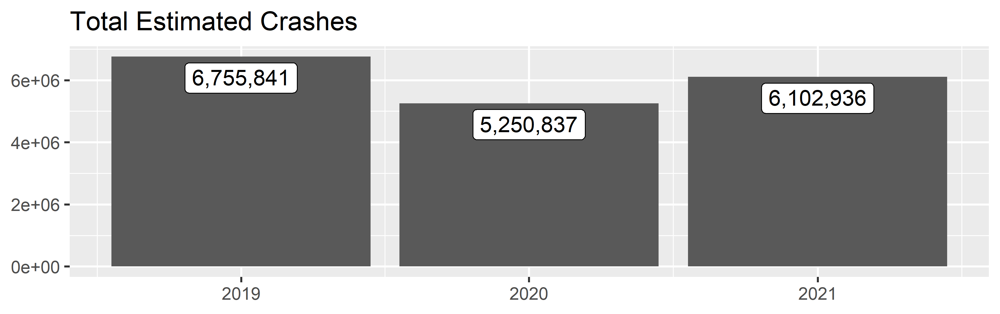
counts(
myGESCRSS,
where = list(region="s"),
what = "injuries",
interval = c("year")
) %>%
ggplot(aes(x=date, y=n, label=scales::comma(n))) +
geom_col() +
geom_label(vjust=1.2) +
labs(x=NULL, y=NULL, title = "Injuries in the South")
compare_counts(
df = myGESCRSS,
what = "injuries",
where = list(region="s"),
where2 = list(region="ne")
) %>%
ggplot(aes(x=date, y=n, label=scales::comma(n))) +
geom_col() +
geom_label(vjust=1.2) +
facet_wrap(.~region) +
labs(x=NULL, y=NULL, title = "Injuries in the South and Northeast", fill=NULL)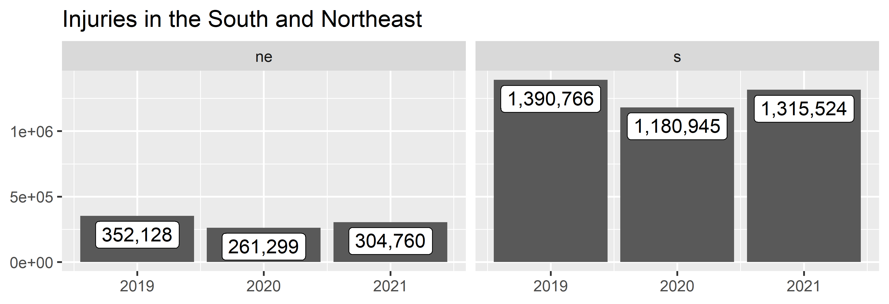
Mapping
GES/CRSS is not very friendly to mapping. It does not provide lat/lon coordinates or States. Regions are composed of several States and require extra steps to generate mappable data.
Modeling
Having access to the full dataset also allows us to develop statistical models. Here we fit a simple model of injury severity as a function of age and restraint use. The results indicate that injury severity increases with age, and when seat belts are not used properly.
# table(myFARS$flat$inj_sev)
# table(myFARS$flat$rest_use, useNA = "ifany")
# table(myFARS$flat$per_typ, useNA = "ifany")
model_data <-
myGESCRSS$flat %>%
filter(rest_use %in% c("Lap Belt Only Used",
"Shoulder Belt Only Used",
"None Used / Not Applicable",
"None Used/Not Applicable",
"Shoulder and Lap Belt Used"),
per_typ %in% c("Driver of a Motor Vehicle In-Transport",
"Passenger of a Motor Vehicle In-Transport")
) %>%
mutate(
rest_use = case_when(
rest_use %in% c("Lap Belt Only Used", "Shoulder Belt Only Used") ~ "Partial",
rest_use %in% c("None Used / Not Applicable", "None Used/Not Applicable") ~ "None",
rest_use %in% c("Shoulder and Lap Belt Used") ~ "Full",
TRUE ~ "Unknown"
) %>%
as.factor() %>%
relevel(ref = "Full"),
kabco = case_when(
inj_sev == "Fatal Injury (K)" ~ 4,
inj_sev %in% c("Suspected Serious Injury (A)",
"Suspected Serious Injury(A)") ~ 3,
inj_sev %in% c("Suspected Minor Injury (B)",
"Suspected Minor Injury(B)") ~ 2,
inj_sev == "Possible Injury (C)" ~ 1,
inj_sev == "No Apparent Injury (O)" ~ 0,
TRUE ~ as.numeric(NA)
),
age_n = gsub("\\D+","", age) %>% as.numeric(),
speed_n = gsub("\\D+","", trav_sp) %>% as.numeric()
)
my_model <- lm(kabco ~ age_n + rest_use + speed_n, data = model_data)
stargazer::stargazer(my_model, type = "html")| Dependent variable: | |
| kabco | |
| age_n | 0.003*** |
| (0.0001) | |
| rest_useNone | 1.320*** |
| (0.009) | |
| rest_usePartial | 0.075*** |
| (0.022) | |
| speed_n | 0.010*** |
| (0.0001) | |
| Constant | 0.030*** |
| (0.007) | |
| Observations | 122,164 |
| R2 | 0.199 |
| Adjusted R2 | 0.199 |
| Residual Std. Error | 0.846 (df = 122159) |
| F Statistic | 7,592.222*** (df = 4; 122159) |
| Note: | p<0.1; p<0.05; p<0.01 |
new_data <- expand.grid(
age_n = c(20, 60),
speed_n = seq(10, 60, 10),
rest_use = factor(c("Full", "Partial", "None"), levels = c("Full", "Partial", "None"), ordered = TRUE) )
new_data %>%
mutate(pred = predict(my_model, newdata = new_data),
age = paste0(age_n, " yrs")) %>%
ggplot(aes(x=speed_n, y=pred, fill=age)) +
geom_col(position = position_dodge()) +
facet_wrap(.~rest_use) +
scale_y_continuous(
limits = c(0,4), breaks = 0:4, labels = c("O", "C", "B", "A", "K"), expand = expansion()) +
theme(panel.grid = element_blank(),
panel.grid.major.y = element_line(c("black")),
axis.ticks = element_blank()) +
labs(x="Travel Speed (mph)", y="", title = "Predicted Injury Severity by Age, Restraint Use, and Travel Speed",
fill="Age",
caption = "Full = correctly used seatbelt, partial = partially correctly used, none = no seatbelt.")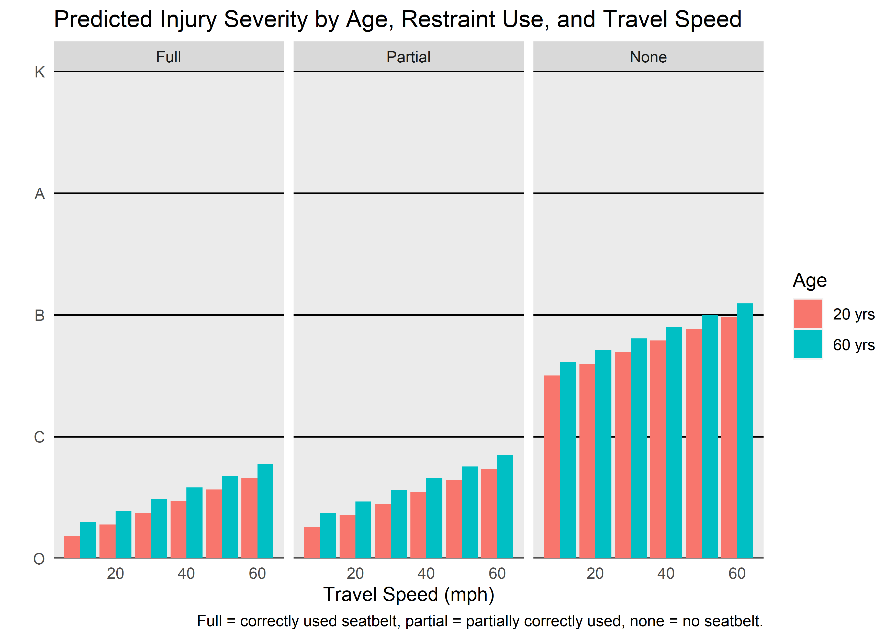